flowchart LR A[Image 1] --> C(Forward Optical Flow) B[Image 2] --> C(Forward Optical Flow) C(Forward Optical Flow) --> D(Backward Warp) B[Image 2] --> D(Backward Warp) D(Backward Warp) --> E[Warped Image 1]
Visual guide to Optical Flow 🌊
computer vision
deep learning
pytorch
opencv
Probably everything you need to know about optical flow 😊
Introduction
Have you wondered how your optical 🖱️ mouse tracks movement? It uses a tiny 📷 camera to capture surface images at high speed, then computes optical flow—the motion of pixels between frames—to detect direction and speed. But optical flow isn’t just for mice; it powers everything from stabilization, self-driving cars 🚗 and even tracking your favorite sports player ⚽ in real time.
What is optical flow?
Optical flow is a 2D vector field of apparent velocities which describes the movement of brightness patterns in an image
Berthold K.P. Horn and his Ph.D. student Brian G. Schunck laid the mathematical foundation for motion estimation in their 1981 paper, “Determining Optical Flow” (Horn and Schunck 1981) which became one of the most influential works in the field of computer vision.
Optical flow continues to remain a core problem in computer vision. In this post, I’ll break it down: what it is, how it works mathematically, and the latest advances like RAFT and FlowFormer++. Finally, I’ll wrap it up by demonstrating real-world applications and discuss unsolved challenges.
Use the Table of Contents (top-right) or the Quick Navigation below to jump to sections.
Quick Navigation (Click to Expand)
Main Components
I’m going to walk through the main components of computing optical flow by taking a two frame example. Hover over the image below to visualize the movement from frame1 to frame2.
Interactive Demonstration
Hover over the image visualization below to see:
- Top: Frame1
- Revealed: Frame2
Notice how:
- UFO moves to the right
- Chewbaka rotates
- Totoro moves down
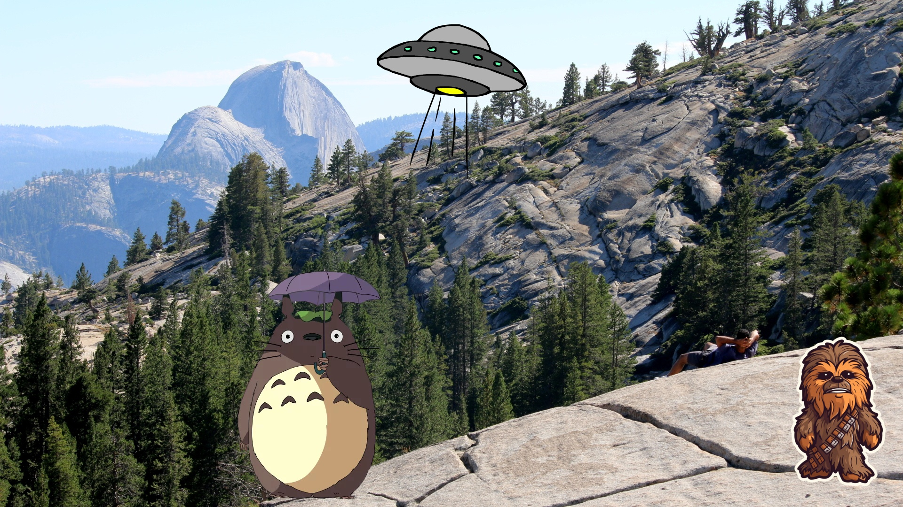 
Visualization
The most widely used optical flow visual representation, standardized by Baker et al. (2007), employs a color-encoded flow field where:
- Hue (color) represents the direction of motion (0-360 degrees mapped to the color wheel)
- Saturation/Brightness represents the magnitude of displacement (brighter = faster motion)
Magnitude scales from white (no motion) to maximum saturation at the flow normalization limit. A reference implementation is available in flow_viz.py.
Interactive Flow Explorer
Explore the flow field below - hover to see how pixel displacements map to actual motion vectors:
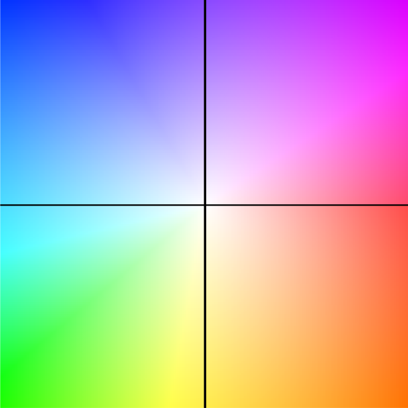
Hover over the flow field to see displacements (dx, dy).
What you’re seeing:
- The arrow shows the displacement from the image center to your cursor position
- Longer arrows = greater motion magnitude
- Arrow direction matches the color wheel convention
Below is the color-coded optical flow estimated between the two example frames shown earlier—capturing how each pixel moved from frame1 to frame2.
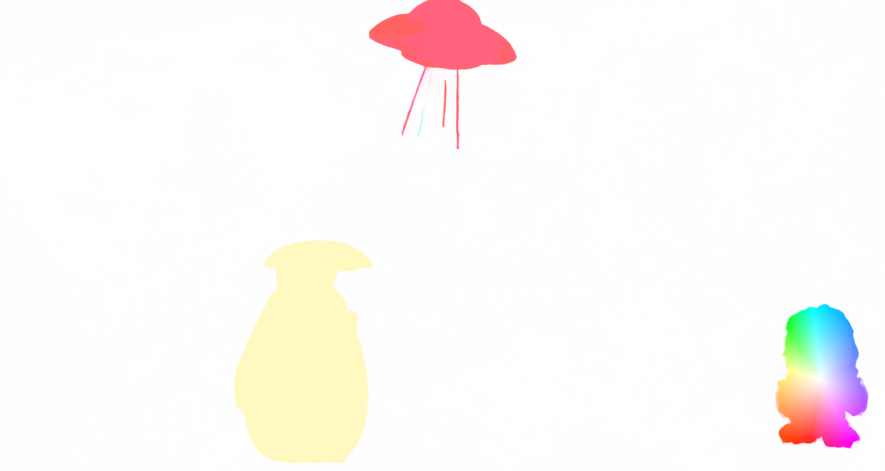
For precise analysis, we often use quiver plots that explicitly show motion vectors:
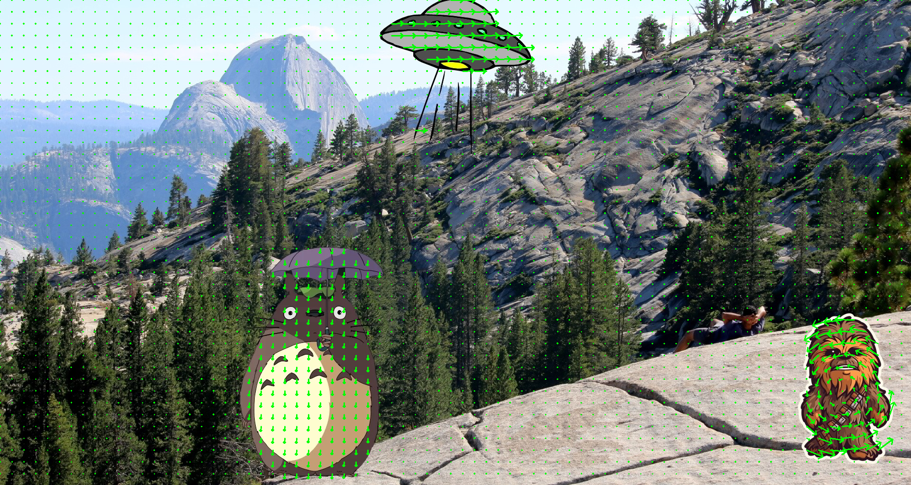
Warping
Using the forward optical flow F₁₂, we can “reverse-project” or warp the second frame (I₂) back in time to approximate the first frame (I₁). This operation effectively maps pixels from their new positions back to their original locations, using the displacement vectors in the flow field.
The diagram below illustrates this concept: given two images and the forward optical flow between them, we can use backward warping to reconstruct the earlier frame.
To understand this intuitively, let’s walk through a simplified 2×2 example where you can easily trace pixel displacements and their impact on the warped image.
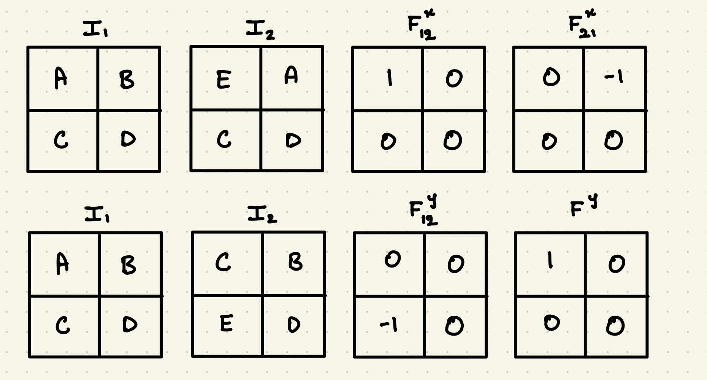
In practice, warping is implemented using a resampling operation—specifically grid_sample in PyTorch—which shifts pixels according to the flow and interpolates the values at non-integer locations.
Image Warping Code (Click to expand)
def image_warp(image, flow):
"""
Warps an image using optical flow with bilinear interpolation.
Args:
image (torch.Tensor): Input image tensor of shape [B, C, H, W]
flow (torch.Tensor): Optical flow tensor of shape [B, 2, H, W]
where:
flow[:,0,...] is horizontal (x) displacement in pixels
flow[:,1,...] is vertical (y) displacement in pixels
Returns:
torch.Tensor: Warped image [B, C, H, W]
"""
B, C, H, W = image.size()
# Create base grid coordinates
xx = torch.arange(0, W).view(1, -1).repeat(H, 1)
yy = torch.arange(0, H).view(-1, 1).repeat(1, W)
# Reshape to [B, 1, H, W] for batch processing
xx = xx.view(1, 1, H, W).repeat(B, 1, 1, 1)
yy = yy.view(1, 1, H, W).repeat(B, 1, 1, 1)
# Combine x and y coordinates into a single grid [B, 2, H, W]
grid = torch.cat((xx, yy), 1).float().to(device)
# Apply optical flow displacement (in pixel coordinates)
vgrid = grid + flow
# Normalize grid coordinates to [-1, 1] range (required by grid_sample)
vgrid[:, 0, :, :] = 2.0 * vgrid[:, 0, :, :].clone() / max(W - 1, 1) - 1.0
vgrid[:, 1, :, :] = 2.0 * vgrid[:, 1, :, :].clone() / max(H - 1, 1) - 1.0
#[B, H, W, 2]
vgrid = vgrid.permute(0, 2, 3, 1)
# Sample image using the flow-warped grid with bilinear interpolation
output = F.grid_sample(image, vgrid, mode='bilinear', padding_mode='zeros')
return outputUsing the flow from our earlier example, we warp frame2 back in time to approximate frame1.
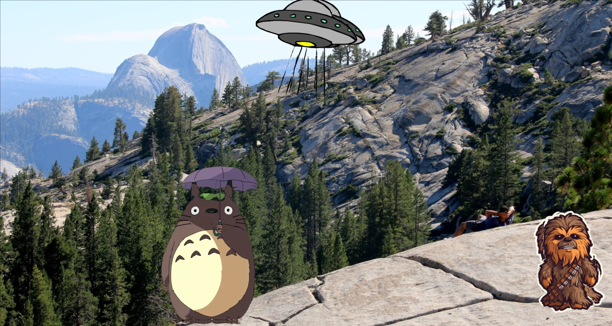
If you look closely at the warped image, you’ll notice artifacts—especially around object boundaries where motion occurred. For example, observe the region around the UFO. Why does this happen, even when the flow is accurate? I’ll explain this phenomenon in the next section.
Handling Occlusions
When computing photometric loss, the brightness constancy assumption breaks down in occluded regions or when objects move out of view. To avoid penalizing these areas incorrectly, we need to estimate occlusions and mask them out.
Why Occlusion Matters
Occlusions create two fundamental challenges for optical flow:
- Disappearing pixels: When objects leave the frame or become hidden
- Newly visible areas: When background becomes exposed
These violate the brightness constancy assumption, leading to:
- False matches in occluded regions
- Inflated errors from unmatchable pixels
- Artifacts in warped images
Interactive Demonstration
Hover over the error visualization below to see:
- Top: Raw photometric error
- Revealed: Error after occlusion masking
Notice how masking:
- Removes noise in disoccluded regions (bright areas)
- Preserves sharp boundaries
- Focuses error on reliable pixels
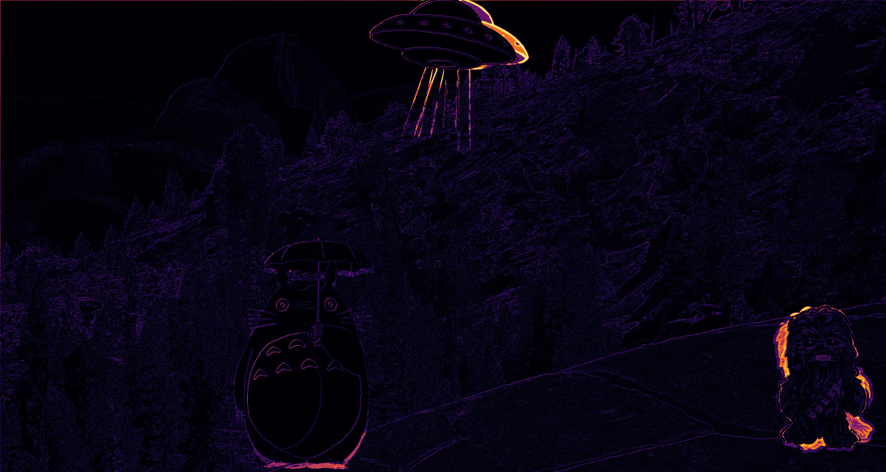 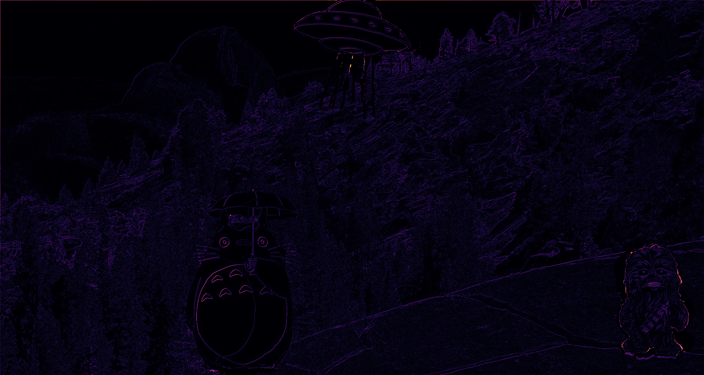
Key Benefits of Occlusion Masking:
- ✂️ Removes “ghosting” effects at motion boundaries
- 🎯 Focuses optimization on reliable pixels
- 📉 Reduces error propagation in iterative refinement
Implementation Approaches
Here are two common approaches:
1. Bidirectional
Bidirectional Occlusion Mask Code (Click to expand)
def get_occu_mask_bidirection(flow12, flow21, scale=0.01, bias=0.5):
flow21_warped = flow_warp(flow21, flow12, pad='zeros')
flow12_diff = flow12 + flow21_warped
mag = (flow12 * flow12).sum(1, keepdim=True) + \
(flow21_warped * flow21_warped).sum(1, keepdim=True)
occ_thresh = scale * mag + bias
occ = (flow12_diff * flow12_diff).sum(1, keepdim=True) > occ_thresh
return occ.float()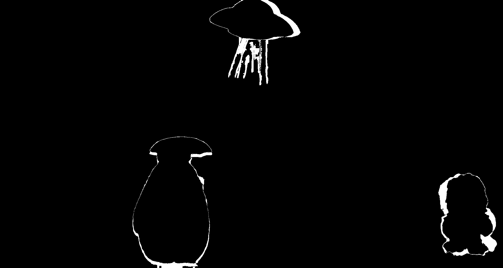
Key Idea:
- Warps the backward flow to forward flow coordinates
- Checks consistency between forward flow and warped backward flow
- Areas with large inconsistencies are marked as occluded
- Adaptive threshold combines absolute and flow-magnitude-dependent terms
When to Use:
- When you have computed both forward and backward flows
- For more accurate occlusion detection in textured regions
2. Backward
Backward Occlusion Mask Code (Click to expand)
def get_occu_mask_bidirection(flow12, flow21, scale=0.01, bias=0.5):
flow21_warped = flow_warp(flow21, flow12, pad='zeros')
flow12_diff = flow12 + flow21_warped
mag = (flow12 * flow12).sum(1, keepdim=True) + \
(flow21_warped * flow21_warped).sum(1, keepdim=True)
occ_thresh = scale * mag + bias
occ = (flow12_diff * flow12_diff).sum(1, keepdim=True) > occ_thresh
return occ.float()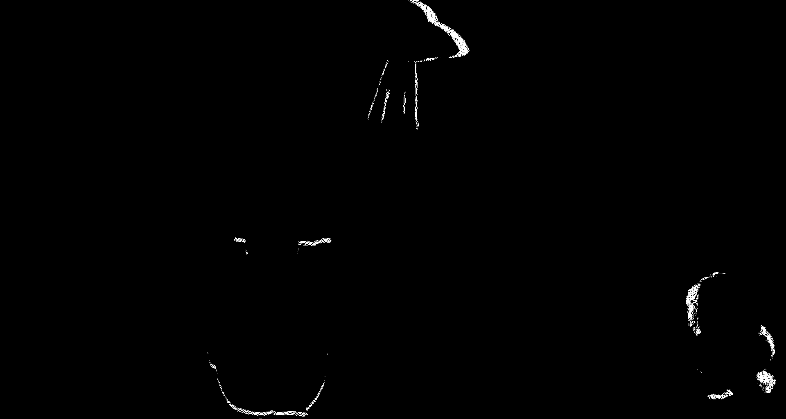
Key Idea:
- Uses only backward flow (t+1→t)
- Combines photometric error and flow magnitude
- Marks pixels as occluded if
- High warping error
- Significant motion magnitude
When to Use:
- When only backward flow is available
- For faster computation with slightly less accuracy
- In low-texture regions where bidirectional checks may fail
Metrics
L1
The L1 loss metric, also known as Mean Absolute Error (MAE), computes the absolute difference between the predicted and actual values. It is often used for its simplicity and robustness against outliers.
Mathematical Definition:
\[ L1 = \frac{1}{N} \sum_{i=1}^{N} |I_1(x_i) - I_2(x_i)| \]
Where:
- I_1(x_i) and I_2(x_i) are the pixel values at position x_i in images I_1 and I_2, respectively.
- N is the number of pixels.
Key Characteristics:
- The L1 loss is linear and easy to compute, but it does not account for the structure of the image, leading to a loss in visual similarity.
Charbonnier
Charbonnier loss is a smooth approximation to L1 loss that helps in preventing gradients from vanishing when dealing with small differences. It is often used for optimization tasks where the learning needs to be more stable.
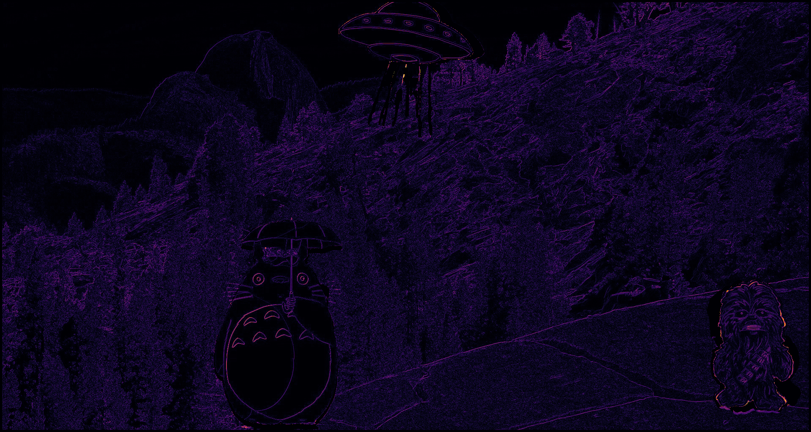
Mathematical Definition:
\[ L_{\text{Charbonnier}} = \frac{1}{N} \sum_{i=1}^{N} \sqrt{(I_1(x_i) - I_2(x_i))^2 + \epsilon^2} \]
Where:
- \(\epsilon\) is a small constant (e.g., \(10^{-3}\)) to prevent division by zero.
- \(I_1(x_i)\) and \(I_2(x_i)\) are the pixel values at position \(x_i\) in images \(I_1\) and \(I_2\), respectively.
- \(N\) is the number of pixels.
Key Characteristics:
- It reduces the impact of outliers by smoothing the loss function, making it more stable than L1 loss during training.
SSIM
The SSIM metric is designed to measure the perceptual similarity between two images by considering luminance, contrast, and structure. Unlike pixel-wise metrics (like L1), SSIM incorporates the local patterns of pixel intensities, capturing more perceptual information.
Mathematical Definition:
\[ \text{SSIM}(I_1, I_2) = \frac{(2\mu_1\mu_2 + C_1)(2\sigma_{12} + C_2)}{(\mu_1^2 + \mu_2^2 + C_1)(\sigma_1^2 + \sigma_2^2 + C_2)} \]
Where:
- \(\mu_1, \mu_2\) are the mean pixel values of images \(I_1\) and \(I_2\).
- \(\sigma_1^2, \sigma_2^2\) are the variances of the pixel values in \(I_1\) and \(I_2\), respectively.
- \(\sigma_{12}\) is the covariance of the pixel values between \(I_1\) and \(I_2\).
- \(C_1\) and \(C_2\) are small constants to stabilize the division with weak denominator values (typically, \(C_1 = (K_1L)^2 and C_2 = (K_2L)^2\), where \(L\) is the dynamic range of the pixel values).
Key Characteristics:
- SSIM is highly sensitive to structural information and human visual perception, which makes it more reliable than L1 loss for tasks like image quality assessment.
Census
Census transform is a non-parametric metric that compares local binary patterns rather than absolute pixel values. It is robust to lighting changes and small intensity variations and is especially useful in scenarios with significant noise or occlusion.
Mathematical Definition:
Let the neighborhood of a pixel in image \(I\) be defined by \(N(x_i)\), which is a square window around the pixel \(x_i\). The census transform \(C(I, x_i)\) for a pixel \(x_i\) in image \(I\) is defined as:
\[ C(I, x_i) = \prod_{x_j \in N(x_i)} \mathbb{I}(I(x_i) > I(x_j)) \]
Where:
- \(\mathbb{I}\) is the indicator function, which is 1 if the condition is true, and 0 otherwise.
- \(I(x_i)\) is the intensity at pixel \(x_i\) in image \(I\).
- \(I(x_j)\) is the intensity at a neighboring pixel \(x_j\) in the neighborhood \(N(x_i)\).
The census transform compares the intensity values within a local window around a pixel and encodes the result as a binary string. The census loss is then computed as the Hamming distance between the census transforms of the corresponding pixels in two images.
Key Characteristics:
- Robust to illumination changes and small intensity variations.
- Not differentiable, making it challenging for optimization via gradient-based methods, but it is very effective in low-texture or noisy regions.
Comparison of Photometric Loss Metrics
| Metric | Description | ✅ Pros | ❌ Cons |
|---|---|---|---|
| L1 | Absolute difference between pixel intensities. | Simple, robust to outliers. | Ignores structure and texture shifts. |
| Charbonnier | Smooth, differentiable variant of L1: √(x² + ε²). | Stable optimization; handles small errors better. | Slightly slower than plain L1. |
| SSIM | Measures structural similarity (luminance, contrast, structure). | Captures perceptual/structural differences. | Sensitive to illumination; more complex to compute. |
| Census | Compares binary patterns of local neighborhoods, not raw intensity. | Very robust to lighting and noise. | Harder to optimize (non-differentiable). |
Mathematical Intuition
The foundational equation of optical flow is based on the brightness constancy assumption, which states that the intensity of a pixel does not change between consecutive frames. This assumption leads to the well-known optical flow constraint equation:
\[ I_x u + I_y v + I_t = 0 \]
Where:
- \(I_x\) and \(I_y\) are the partial derivatives
- \(I_t\) is the partial derivative of the image intensity with respect to time (\(t\)).
- \(u\) and \(v\) are the components of the optical flow vector (horizontal, vertical).
The equation above implies that for each pixel, the rate of change of intensity over time can be attributed to the motion of the pixel in the image plane. This is the optical flow constraint.
Horn and Schunck’s Optical Flow Model
(Horn and Schunck 1981) introduced a regularized version of the optical flow problem to address the ill-posed optical flow equation. Their model adds a smoothness assumption, which assumes that neighboring pixels have similar motion.
The formulation they proposed can be written as:
\[ \min_{u,v} \int \left[ (I_x u + I_y v + I_t)^2 + \alpha^2 (I_x^2 + I_y^2)(u_x^2 + u_y^2 + v_x^2 + v_y^2) \right] dx dy \]
Where:
- The first term is the data term, which enforces the optical flow constraint.
- The second term is the smoothness term, which enforces spatial smoothness of the flow field. It penalizes large variations in the flow between neighboring pixels.
- \(\alpha\) is a regularization parameter that controls the trade-off between the data term and the smoothness term.
Here, \(u_x\) and \(u_y\) represent the spatial derivatives of \(u\) (horizontal), and \(v_x\) and \(v_y\) represent the spatial derivatives of \(v\) (vertical). The smoothness term ensures that the flow field does not have sharp discontinuities, which helps in obtaining a physically plausible solution.
Key Assumptions of the Horn-Schunck Method:
- Brightness Constancy: The pixel intensity does not change over time for any given object in the scene.
- Smoothness: The flow is smooth across the image, meaning that neighboring pixels move in similar ways.
- Global Regularization: The optical flow is computed globally across the entire image, meaning that all pixels are influenced by the flow of neighboring pixels through the regularization term.
This model led to a well-known global method for optical flow computation, which involves solving the system of equations derived from the above functional using iterative techniques, such as gradient descent or other optimization algorithms.
Classical Approach
There are two implementations of classical optical flow with OpenCV:
Lucas-Kanade (Sparse)
Key Idea:
- Tracks feature points (corners/edges) by assuming constant flow in local neighborhoods (typically 3×3 or 5×5 windows)
- Solves the optical flow equation \(I_x u + I_y v + I_t = 0\) using least squares
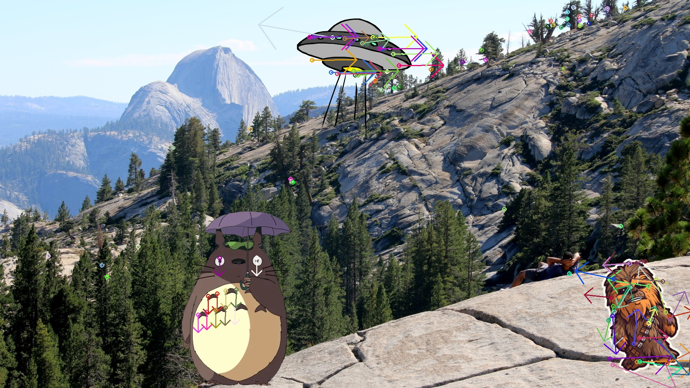
Implementation
flow = cv2.calcOpticalFlowPyrLK(prev_frame, next_frame,
prev_pts, None, winSize=(7,7))Characteristics
Pros:
✅ Fast (only computes for keypoints)
✅ Works well for small displacements
Cons:
❌ Fails in textureless regions
❌ Struggles with large motions
Farnebäck (Dense)
Key Idea:
- Models image patches as quadratic polynomials to estimate flow at every pixel
- Uses polynomial expansion to approximate motion
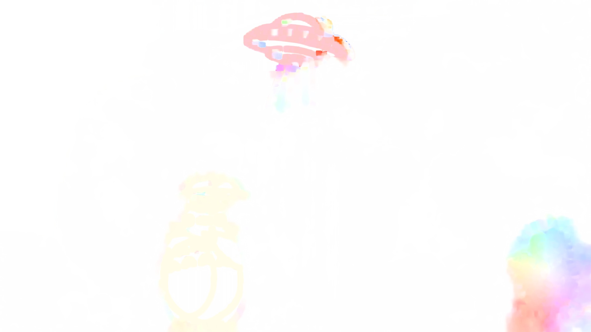
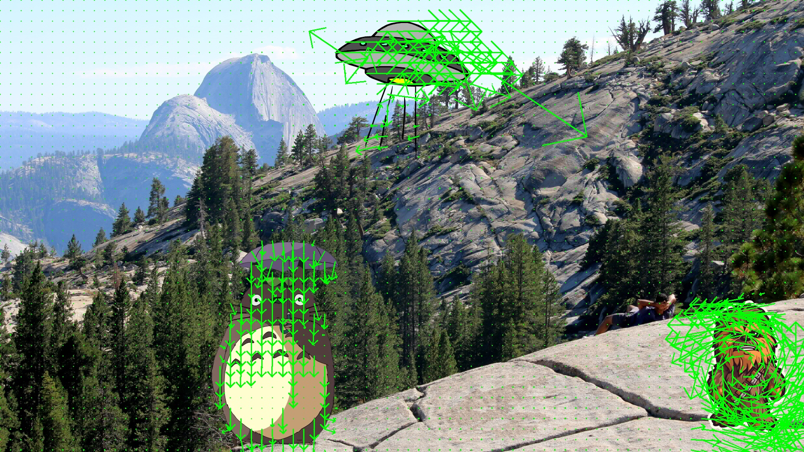
Implementation
flow = cv2.calcOpticalFlowFarneback(prev_frame, next_frame,
None, pyr_scale=0.5, levels=3, winsize=7)Characteristics
Pros:
✅ Full motion field
✅ Handles moderate occlusion
Cons:
❌ Computationally heavy
❌ Blurry motion boundaries
SOTA
RAFT Recurrent All-Pairs Field Transforms
Builds dense 4D all-pairs correlation volumes by matching every pixel with every other and employs a lightweight recurrent GRU-style updater to iteratively refine the flow field (Teed and Deng 2020).
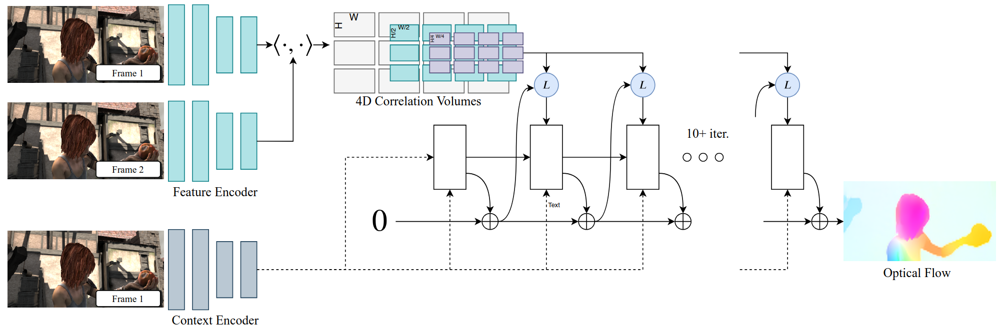
FlowFormer++
Improves optical flow estimation by introducing a hierarchical Transformer-based architecture with cost-volume encoding and decoupled update modules, enabling long-range and fine-grained motion modeling (Shi et al. 2023).
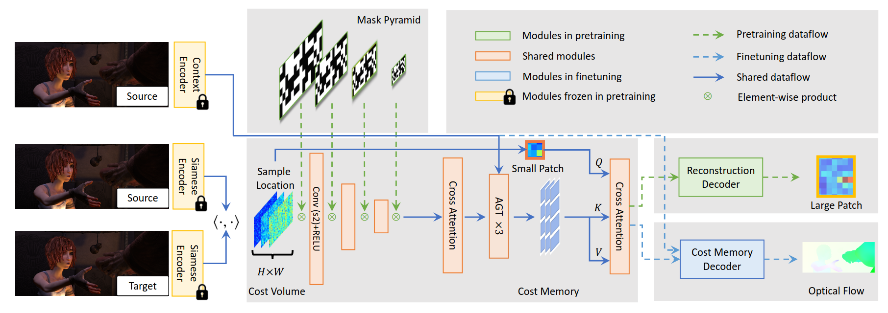
Applications
| Application | Description |
|---|---|
| Video Synthesis | Generates intermediate frames by estimating motion between video frames, enabling smooth transitions like slow-motion. |
| Video Inpainting | Fills in missing or damaged video regions by tracking the motion of surrounding pixels, ensuring temporal consistency. |
| Video Stabilization | Compensates for camera shake by estimating motion and stabilizing consecutive frames, creating smoother video output. |
| Low Level Vision | Provides motion information for tasks like object tracking, motion detection, and scene reconstruction. |
| Stereo and SLAM | Used in depth estimation and 3D reconstruction by combining with stereo images, crucial for robotics and self-driving. |
Challenges
Handling Occlusions
Occlusions occur when objects move out of view or are blocked by other objects, creating areas where flow cannot be reliably estimated. These regions lead to inaccuracies in the flow field, which can complicate tasks like video synthesis or scene reconstruction.
Large Motion Estimation
Estimating optical flow for large displacements is a challenge because large motions may result in pixel mismatches or erroneous vectors. When objects move quickly across the scene, the flow field becomes more difficult to compute accurately, often leading to significant errors.
Illumination Changes
The brightness constancy assumption, a core principle of many optical flow algorithms, can be violated when there are changes in lighting conditions, shadows, or reflections between consecutive frames. This makes it challenging to maintain accurate flow estimation under varying illumination.
Non-Rigid Motion
Non-rigid motion refers to the deformation of objects, such as a person walking or a flag flapping in the wind. Unlike rigid motion, non-rigid motion does not follow predictable patterns, which makes optical flow estimation much more complex.
References
Baker, Simon, Stefan Roth, Daniel Scharstein, Michael J. Black, J. P. Lewis, and Richard Szeliski. 2007. “A Database and Evaluation Methodology for Optical Flow.” 2007 IEEE 11th International Conference on Computer Vision, 1–8. https://doi.org/10.1109/ICCV.2007.4408903.
Horn, Berthold K. P., and Brian G. Schunck. 1981. “Determining Optical Flow.” Artificial Intelligence 17 (1): 185–203. https://doi.org/https://doi.org/10.1016/0004-3702(81)90024-2.
Shi, Xiaoyu, Zhaoyang Huang, Dasong Li, Manyuan Zhang, Ka Chun Cheung, Simon See, Hongwei Qin, Jifeng Dai, and Hongsheng Li. 2023. “Flowformer++: Masked Cost Volume Autoencoding for Pretraining Optical Flow Estimation.” In Proceedings of the IEEE/CVF Conference on Computer Vision and Pattern Recognition, 1599–1610.
Teed, Zachary, and Jia Deng. 2020. “RAFT: Recurrent All-Pairs Field Transforms for Optical Flow.” In Computer Vision – ECCV 2020: 16th European Conference, Glasgow, UK, August 23–28, 2020, Proceedings, Part II, 402–19. Berlin, Heidelberg: Springer-Verlag. https://doi.org/10.1007/978-3-030-58536-5_24.